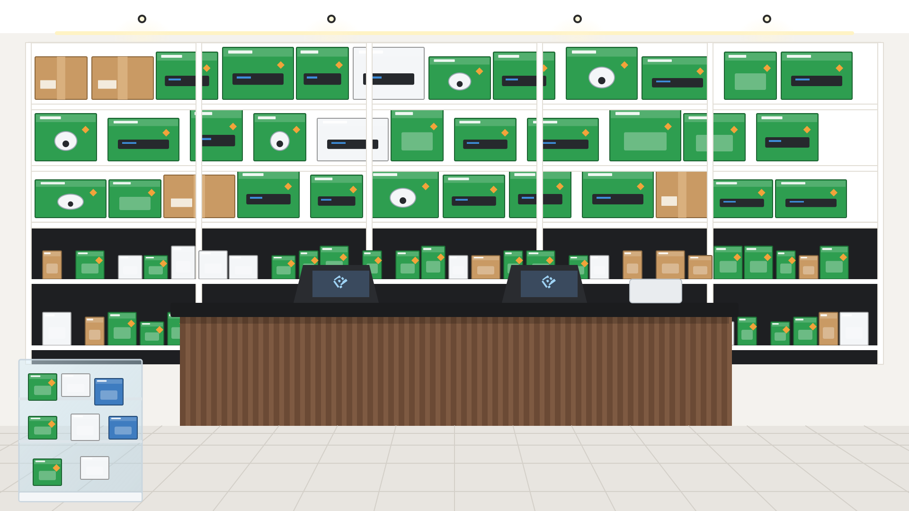
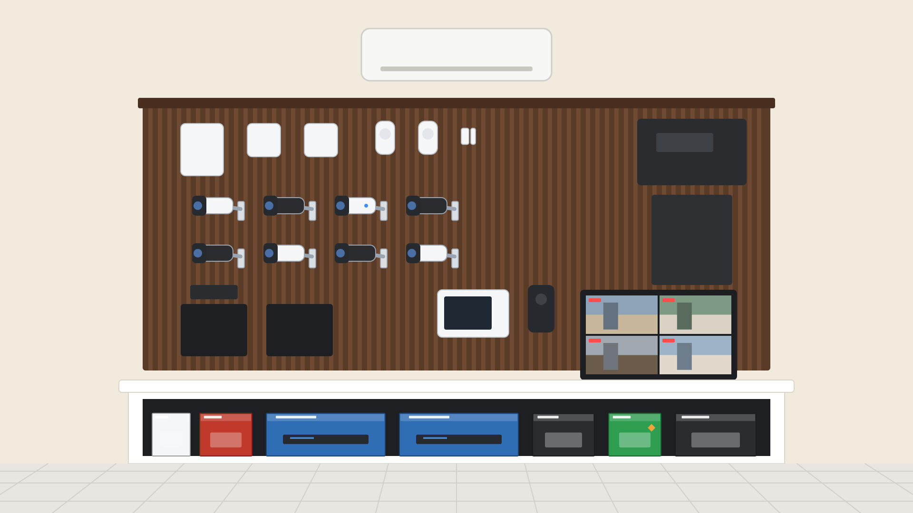
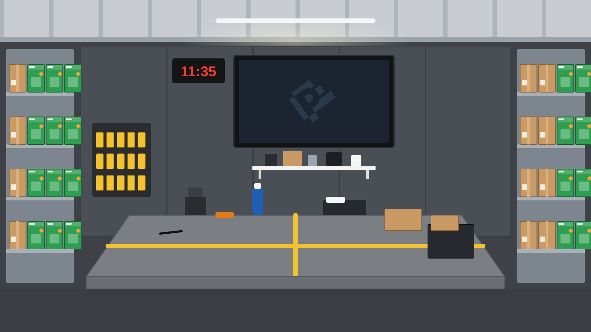
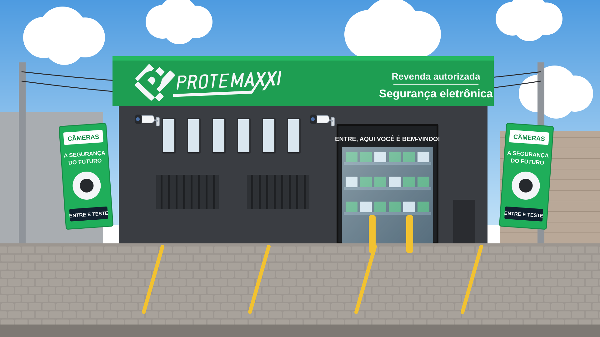
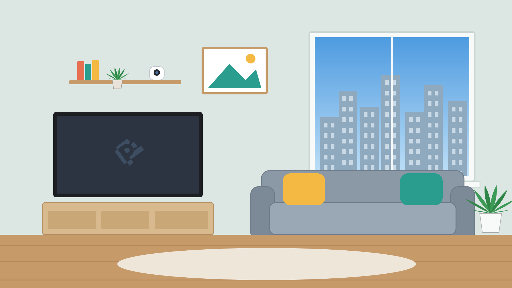
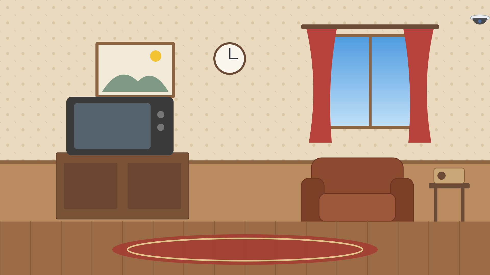
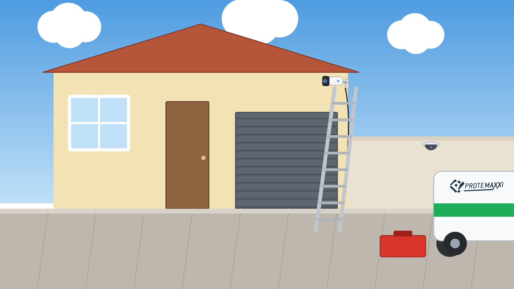
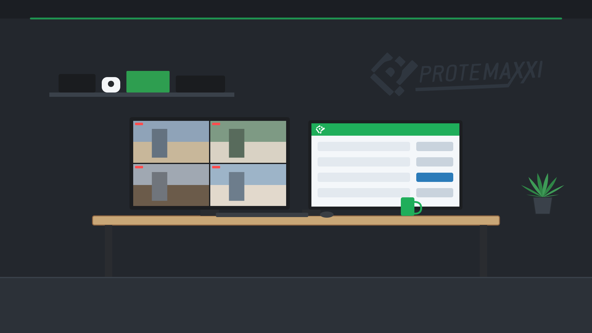

Loja: interior e balcão
Prateleiras brancas cheias de caixas verdes, nichos pretos embaixo, balcão de madeira ripada com notebooks e expositor de vidro na frente.
Personagens: Rodrigo, Vinícius, Seu Antônio, Fernanda

Prateleiras brancas cheias de caixas verdes, nichos pretos embaixo, balcão de madeira ripada com notebooks e expositor de vidro na frente.
Personagens: Rodrigo, Vinícius, Seu Antônio, Fernanda

Parede de madeira ripada com câmeras, alarmes, sensores, vídeo porteiro, gravadores e monitor mostrando as câmeras ao vivo. Bom para explicar produto.
Personagens: Rodrigo, Vinícius, Caio

Bancada cinza com fitas amarelas, TV e relógio na parede, estantes de aço com caixas e rolos de cabo embaixo da bancada.
Personagens: Luana

Prédio grafite com letreiro verde da Protemaxxi, porta de vidro, banners laterais e estacionamento com faixas amarelas.
Personagens: Vinícius, todos

Sala moderna com janela para a cidade, sofá, TV, prateleira com câmera Wi-Fi e plantas.
Personagens: Fernanda, Marcão, Caio

Sala clássica com papel de parede, cortina vermelha, poltrona, TV antiga, rádio e câmera dome no canto.
Personagens: Seu Antônio, Marcão

Frente de casa com câmera sendo instalada no canto, escada, caixa de ferramentas, rolo de cabo e a van da Protemaxxi.
Personagens: Marcão, Seu Antônio, Fernanda

Mesa com dois monitores (mosaico de câmeras e aplicativo de configuração), prateleira de equipamentos e logo da Protemaxxi na parede.
Personagens: Caio